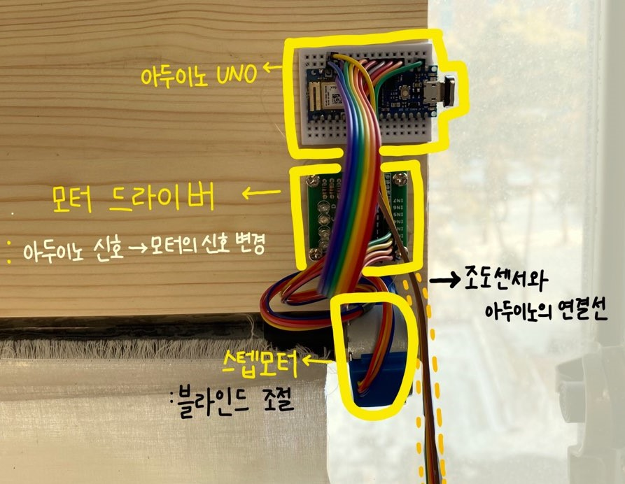
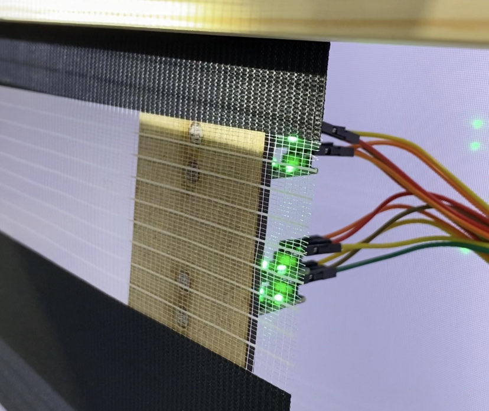
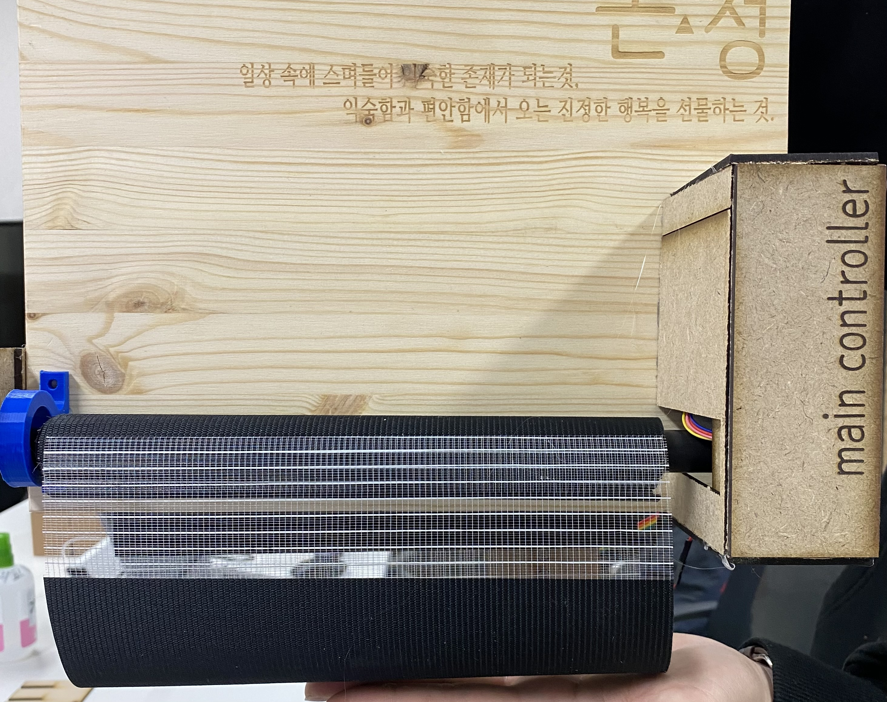

해의 움직임에 의해 조금씩 들어오는 햇빛🌞
블라인드 내리기 귀찮으셨죠?
오늘부터 조금은
' 게을러져봅시다! '
여러분의 휴식이 잠시라도 끊기지 않도록
자동 블라인드 컨트롤러를 장만해보는건 어떨까요?
  
제품의 전면부
아두이노를 통하여 통과하는 빛의 양을 추출
🔻
블라인드 사이로 기대 이상의 빛이 들어 올 경우
모터가 블라인드를 동작
제품의 후면부
조도센서가 블라인드 뒷편에 부착
4개의 조도센서를 이용하여 사용자가 설정한 값에 맞게
블라인드를 조절
시제품의 최종모습
아두이노와 조도센서를 블루투스를 연결
🔻
제품의 부피 감소 기대가능
시제품 시연 영상
<정면 모습>
: 손전등의 빛을 차단 시키는 방향으로
블라인드 동작
<후면 모습>
: 빛의 차단 확인 가능
제품 활용 가능 분야